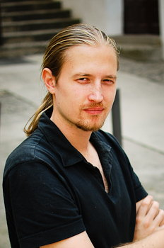

Tadej Štajner
Contact
tadej@tdj.si
Presence
Current position
- Senior Engineer, HERE
- Machine learning on driver mobility and automotive applications.
Previous positions
- Data engineer, TVBeat
- Processing and analysis of real-time TV viewer habits
- Co-founder, lead developer, Magazinius
- A next-gen digital publishing and design tool with responsive automated layout.
- Research assistant, Artificial Intelligence Laboratory, Jožef Stefan Institute (academic webpage)
- Named entity disambiguation using background knowledge (linking text with knowledge - demo)
- Triple store for fast entity retrieval and entity graph algorithms (knowledge graph database - demo)
- Named entity extractor for slovene (finding mentions of proper names, part of enrycher, available here)
- Summarizing microposts in social media (Twitter summarization - show only most interesting posts)
- Multi-lingual sentiment analysis for English and Spanish
- Fast training of sentiment analysis models using active learning (demo)
- Recommender system for contextualization of knowledge work (Suggest documents and e-mails related to what you're currently doing)
- Developer, Zemanta (May 2008 - November 2008)
- Content analysis back-end development
- NLP, Python, C++, Linux
- Freelance web developer (September 2007 - August 2008)
- Drupal-based CMS solutions
- Developer, SRC.SI (June 2004 - September 2007)
- Development of applications for business process support (Struts/Java)
- Front-end development, UI (HTML, JavaScript, JSP)
Involvement
- W3C Working group: Multilingual Web - LT (development of a standard for the process of localization and internationalization; my focus is on integration of automated language tools in the content authoring and enrichment step)
- Brownbag seminar @ JSI (I was hosting a research seminar for disseminating early-stage research and technology demonstrators)
Things I do
- Data science: natural language processing, language technologies, web analytics, social media analytics, summarization, sentiment analysis, entity disambiguation, process mining, semantic web stack, news mining, machine learning, crowdsourcing
- Software development: big data, numerical computing, high performance computing, web application development, systems programming
Education
Publications
Presentations
